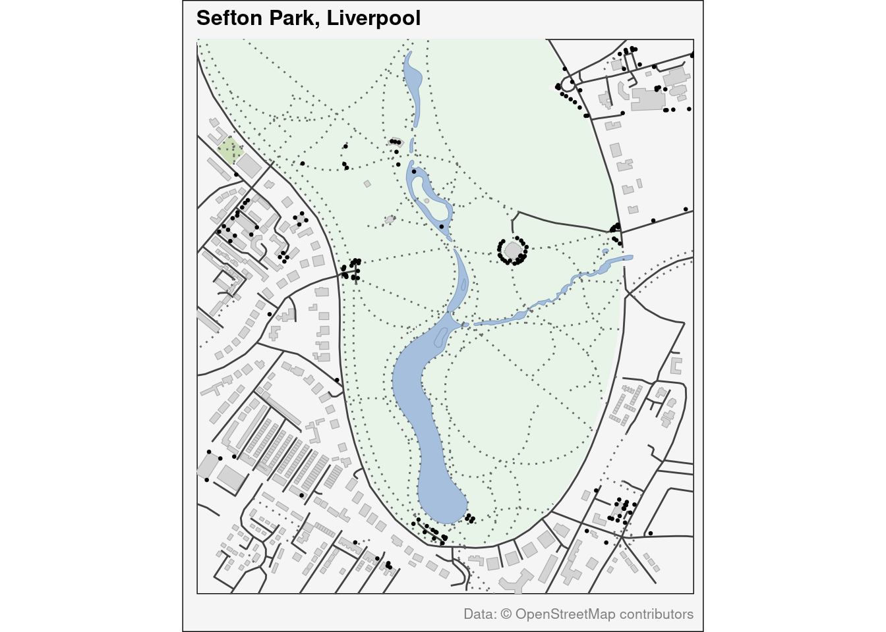

![]()
library(tidyverse)
library(osmdata)
library(sf)
library(ggplot2)Day 27: Micromapping
Sefton Park is my nearest large park in Liverpool and very popular. I have not tended to use R to make maps that aren’t data visualisations, so I used todays challenege to create somethign more cartographically orientated.
Defining the Area
# Define the bounding box for Sefton Park
bbox <- c(xmin = -2.945, ymin = 53.375,
xmax = -2.930, ymax = 53.385)Downloading OpenStreetMap Data
# Create the query
query <- opq(bbox = bbox)
# Get all relevant features
# Parks and green spaces
parks <- query %>%
add_osm_feature(key = "leisure", value = "park") %>%
osmdata_sf()
grass <- query %>%
add_osm_feature(key = "landuse", value = "grass") %>%
osmdata_sf()
garden <- query %>%
add_osm_feature(key = "leisure", value = "garden") %>%
osmdata_sf()
allotments <- query %>%
add_osm_feature(key = "landuse", value = "allotments") %>%
osmdata_sf()
# Water features
water <- query %>%
add_osm_feature(key = "natural", value = "water") %>%
osmdata_sf()
# Buildings and infrastructure
buildings <- query %>%
add_osm_feature(key = "building") %>%
osmdata_sf()
# Roads - more comprehensive categorization
primary_roads <- query %>%
add_osm_feature(key = "highway", value = c("primary", "primary_link")) %>%
osmdata_sf()
secondary_roads <- query %>%
add_osm_feature(key = "highway", value = c("secondary", "secondary_link")) %>%
osmdata_sf()
tertiary_roads <- query %>%
add_osm_feature(key = "highway", value = c("tertiary", "tertiary_link")) %>%
osmdata_sf()
residential_roads <- query %>%
add_osm_feature(key = "highway", value = c("residential", "living_street", "unclassified")) %>%
osmdata_sf()
service_roads <- query %>%
add_osm_feature(key = "highway", value = "service") %>%
osmdata_sf()
paths <- query %>%
add_osm_feature(key = "highway", value = c("footway", "path", "track", "steps", "pedestrian")) %>%
osmdata_sf()
# Additional features
amenities <- query %>%
add_osm_feature(key = "amenity") %>%
osmdata_sf()
leisure <- query %>%
add_osm_feature(key = "leisure") %>%
osmdata_sf()Next we can create the map as a series of layers…
# Create the base map
ggplot() +
# Base layer - background
geom_sf(data = parks$osm_polygons,
fill = "#E8F4E8", # Light green background
color = NA) +
# Green spaces
geom_sf(data = grass$osm_polygons,
fill = "#CCDEB8", # Lighter green for grass
color = NA) +
geom_sf(data = garden$osm_polygons,
fill = "#C8FACC", # Slightly different green for gardens
color = NA) +
geom_sf(data = allotments$osm_polygons,
fill = "#E4E4E4", # Grey for allotments
color = "#C8C8C8") +
# Water features
geom_sf(data = water$osm_polygons,
fill = "#A5BFDD", # Light blue for water
color = "#819CBD") +
# Buildings
geom_sf(data = buildings$osm_polygons,
fill = "#D4D4D4", # Grey for buildings
color = "#A9A9A9") +
# Roads - all in dark grey with different widths for hierarchy
geom_sf(data = primary_roads$osm_lines,
color = "#424242", # Dark grey
size = 1.2) +
geom_sf(data = secondary_roads$osm_lines,
color = "#424242",
size = 1.0) +
geom_sf(data = tertiary_roads$osm_lines,
color = "#424242",
size = 0.8) +
geom_sf(data = residential_roads$osm_lines,
color = "#424242",
size = 0.6) +
geom_sf(data = service_roads$osm_lines,
color = "#424242",
size = 0.4) +
# Paths
geom_sf(data = paths$osm_lines,
color = "#666666", # Lighter grey for paths
size = 0.3,
linetype = "dotted") +
# Amenities (points)
geom_sf(data = amenities$osm_points,
color = "#000000",
size = 0.5) +
# Coordinate system and bounds
coord_sf(xlim = c(bbox["xmin"], bbox["xmax"]),
ylim = c(bbox["ymin"], bbox["ymax"])) +
# Labels and styling
labs(title = "Sefton Park, Liverpool",
caption = "Data: © OpenStreetMap contributors") +
theme_minimal() +
# Theme customization
theme(plot.title = element_text(size = 12, face = "bold"),
plot.caption = element_text(size = 8, color = "grey50"),
panel.grid = element_blank(),
panel.background = element_rect(fill = "#F5F5F5"),
plot.background = element_rect(fill = "#F5F5F5"),
# Remove all axis elements
axis.text = element_blank(),
axis.ticks = element_blank(),
axis.title = element_blank()) 